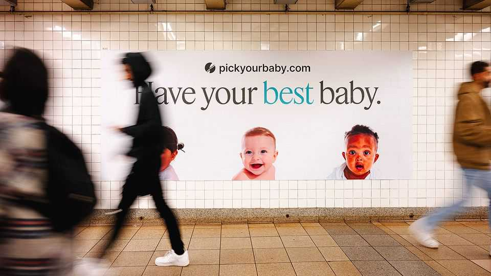

In praise of designer-ish babies
Couples should be allowed to select embryos on the basis of both disease resistance and IQ

Aug 13th 2026
Having transformed human life, Silicon Valley is now coming for birth. A spate of startups offer screening services that allow couples having children via in-vitro fertilisation (IVF) to assess embryos based on their genetic risk of diseases such as breast cancer and diabetes. Some venture further into science-fiction territory, providing scores for IQ and height, or even eye and hair colour.
Critics are dismayed. Some worry firms are pushing immature technology onto vulnerable couples. Others say that even if the tech works, its use is immoral. Both arguments contain kernels of truth; neither is ultimately convincing. Banning or heavily restricting embryo screening would be a mistake.
For now, the debate is a niche concern. The startups mostly cater to the rich, famous and odd. Yet that will change. A wave of investment means that the cost of IVF is likely to fall. If offered embryo screening at the same time, many couples will take it. One survey suggests that three-quarters of Americans support screening embryos for diseases; about a third say the same for non-disease traits. And that is before competitive pressure kicks in. Who wants to see their child bested by genetically selected classmates?
Many medics—including nearly every genetics and reproductive-medicine group in the rich world—question whether such “polygenic” prediction is ready for consumers. In Britain, where fertility is more regulated than in America, selecting an embryo on the basis of non-approved factors is unlawful.
There are indeed reasons for caution. Polygenic scores are tricky. For many diseases caused by a single gene, testing offers near-certainty: if an embryo has the material, it will develop the condition. Yet an assessment of multiple genes leads to risk estimates, rather than a binary answer—and such estimates are more accurate for people with European ancestry, because they are better represented in genetic databases.
Further caveats are in order. Risk reductions can look large in relative terms but be small in absolute ones, particularly for rare diseases. Selecting for some traits may raise the risk of other less desirable ones. Even for highly genetically determined traits like height, parents remain limited by the range found in their own embryos.
These facts are an argument for disclosure, however, rather than legal restrictions or outright bans. If companies want to offer polygenic scoring, they must adequately communicate the technology’s limits and risks. They should also let their tests undergo independent scrutiny. This will not scupper a nascent business, since the startups are not, as some critics allege, selling snake oil. A study in 2019 found that parents choosing from among ten embryos may be able to boost their child’s height by 1-6cm and IQ by between one and seven points—with tech that is now nearly a decade old. As genetic databases get better and cover broader populations, and AI draws out the relationship between genes and traits, scores will improve.
Such progress will raise difficult ethical questions. Some, including the “Make America Healthy Again” movement, argue that fertility tech corrupts what should be a natural process. Others worry that if polygenic screening is limited to the rich, their offspring will have another unfair advantage. The scariest critique is that fertility entrepreneurs are this century’s eugenicists.
But none of these arguments stands up to scrutiny. “Unnatural” technology is already used in many modern births: this argument against embryo selection just as easily applies to IVF, for instance, which only zealots want banned. Costs should come down, making screening more widely available. And there is a big difference between the murderous coercion of early-20th-century eugenics programmes and parents seeking as much knowledge as possible when picking an embryo.
Couples desperate for a clever child might be better advised to focus on what happens after birth. Yet so long as parents understand there is no such thing as the perfect baby, the state should not stand in the way of a bit more information. ■